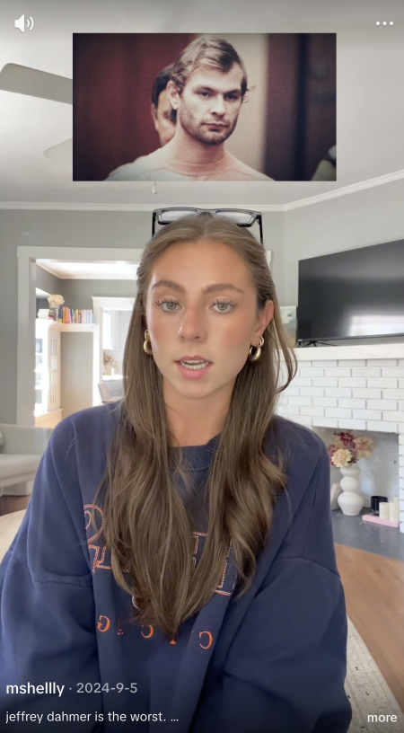
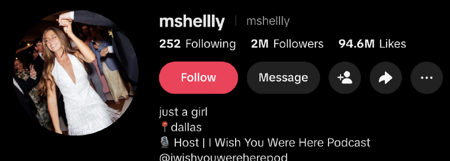
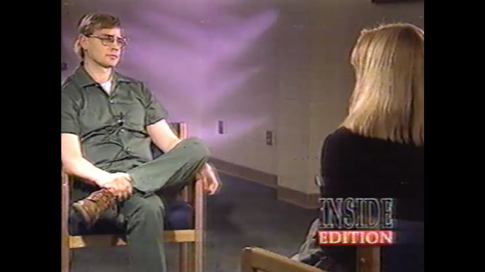
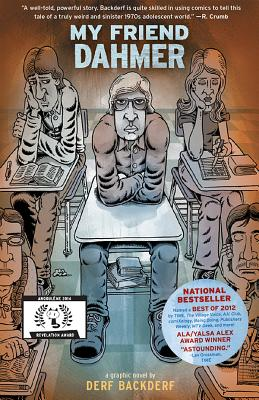
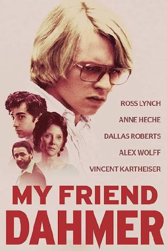
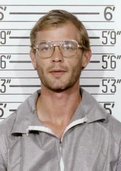
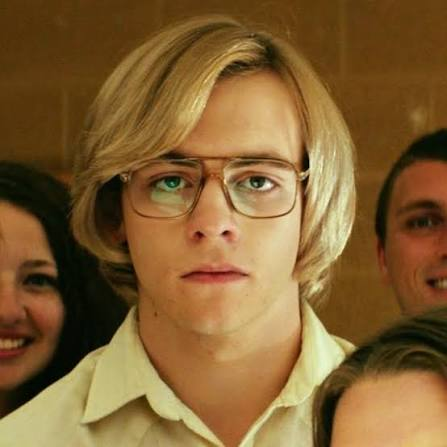
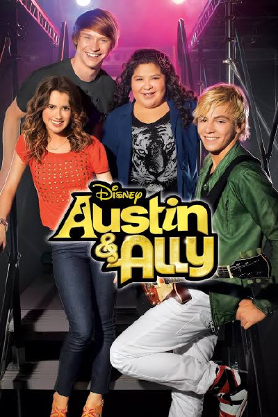

Our claim
One story,
three languages.
Comparing a TikTok video, a 1993 tabloid interview, and a 2017 feature film reveals that true crime is not one story but a book repeated in different languages. Each form converts the Dahmer case into what it rewards: TikTok into engagement, Inside Edition into access, My Friend Dahmer into sympathy. The conventions are different but the product is the same. In every version, the seventeen victims, most of them Black men and boys failed by the local police, recede as the killer grows. The story becomes content to be reacted to, discussed, and forgotten a few scrolls later. Killer centered media is now a flaw, rather the genre’s defining convention, and each new form finds a new way to enact it.
The corpus
Three forms, ranked by
how close they let you get.
@mshellly, TikTok
A thirteen-minute video by creator @mshellly, posted September 2024.
Read the analysis → Broadcast news interviewNancy Glass interviews Jeffrey Dahmer
Inside Edition, February 1993. Filmed in prison.
Read the analysis → Narrative feature filmMy Friend Dahmer
Dir. Marc Meyers, 2017. Adapted from Derf Backderf’s graphic memoir.
Read the analysis →TikTok
Creator @mshellly.
- Platform: TikTok
- Creator: @mshellly
- Form: vertical short-form
Short-form video by @mshellly. Source: tiktok.com/@mshellly.


Her 13 minute long TikTok video opens with creator @mshellly briefly introducing potential influences from Jeffrey Dahmer’s childhood, mentioning conflict within his family, his mother’s mental health struggles, his father’s absence, and a behavioral change after childhood surgery at age four. Yet these details never develop into a sustained attempt to explain his actions. Rather, the creator ultimately frames him as almost incomprehensibly evil, repeatedly emphasizing her own inability to understand his actions. Her explicit argument is straightforward: Dahmer deserves unequivocal moral condemnation, a verdict she delivers directly in lines like “this man is straight evil.” More implicitly, the creator prioritizes establishing distance between Dahmer and the “normal people” watching his story, contemplating that it does not make sense how “we are the normal people” while someone with “a brain and heart” could do these things. That distancing has a cost: the video names no victim, a choice the creator announces in an opening disclaimer as respect for the families, never mentions that most of the men he killed were black, and compresses the police returning 14-year-old Konerak Sinthasomphone into “police believed Jeffrey.” These are the exact failures the 1991 press and federal civil rights litigation centered. Whatever the intent, the result is a story with one name in it: Jeffrey Dahmer.
The creator’s personality plays an unusually large role in establishing her perspective. Rather than adopting a detached tone associated with traditional reporting, she constantly reminds viewers of her presence as the narrator. She begins by admitting, “I thought I knew the story, but I did not,” and claims that she “never want[s] to hear his name again.” At one point, text appears on the screen saying that she is “second guessing” her decision to cover Dahmer at all. These reactions contribute little factual information, but serve an important rhetorical purpose, which is to show viewers how they are supposed to react. Her disgust becomes a model for the audience’s own disgust. Thus, instead of building ethos through expertise, she builds it through relatability, presenting herself as an ordinary person encountering something horrifying alongside her viewers.
The conventions of TikTok further amplify the creator’s relatability. She speaks extremely quickly, compressing years of events into a rapid sequence of increasingly shocking moments. That pacing, likely a product of the platform’s time constraints, leaves little time to linger on context, uncertainty, or the victims. However respectful the creator’s stated reason for withholding their names, the effect remains: the victims exist only as a body count. TikTok’s community guidelines system also visibly affects the language of the story. The creator mutes portions of her narration, abbreviates sexual assault as “SA,” and substitutes euphemisms such as “was no longer alive” for more direct language. This level of censorship creates a strange tension within the media form, where the video depends upon the disturbing nature of the case to hold viewers’ attention, while simultaneously sanitizing its language enough to remain acceptable on TikTok. Effectively, the story is being told in a completely different way.
The creator also keeps her fanbase in mind, drawing the viewer in through her specific way of storytelling. After repeatedly describing how disgusted she is and insisting that she never wants to think about Dahmer again, the creator asks viewers to “let me know what you think” before ending with the affectionate influencer-style farewell, “I love you so so much” and “massive kiss on the forehead.” The abrupt shift from retelling horrific events to speaking intimately to her audience illustrates the striking measures taken to gain and maintain a fanbase. The creator reinforces the story of Jeffrey Dahmer as content to be reacted to, discussed in the comments, and most likely forgotten a few scrolls later. She transforms the crime into a participatory experience for her viewers, prioritizing shock, identification with the narrator, and audience engagement over analysis.
The Nancy Glass Interview
Produced by Inside Edition and filmed at the maximum-security prison where Dahmer was incarcerated.
- Outlet: Inside Edition
- Interviewer: Nancy Glass
- Setting: maximum-security prison
- Form: broadcast news
Interview with Jeffrey Dahmer, conducted by Nancy Glass for Inside Edition. Source: youtube.com.
If TikTok’s authority comes from relatability and My Friend Dahmer’s from sympathy, then the Inside Edition interview’s authority comes from access. In February 1993, the newsmagazine aired Nancy Glass’s exclusive prison interview with Dahmer, conducted a year into his sentence. True crime’s implicit argument is embedded in how the program frames the exclusivity: understanding Dahmer means hearing from the killer himself. The TikTok creator narrates for Dahmer and the film reenacts him, whereas Nancy Glass simply hands him the microphone.

What he does with the microphone is the segment’s whole product. Dahmer explains, in a flat monotone voice, that he killed not from anger nor hatred but from an “obsessive desire” to control and permanently possess his victims. He felt no repulsion, rather a “surge of energy” and explained that when you view a person “as just an object, an object for pleasure … it seems to make it easier to do things you shouldn’t do.” The broadcast’s conventions do the interpretive work the creator’s disgust does on TikTok, only the interview maintains a posture of authority. Glass’s narration warns viewers that Dahmer’s articulateness is a “thin disguise,” telling us not to trust the very access the program is built on.
The interview, despite its sensationalism (showing childhood pictures and videos of his apartment), is remarkably thorough, including much of the information the TikTok omits. Victims are named, the broadcast cuts away from the interview to present primary evidence, and, surprisingly, investigates the racial aspect of Dahmer’s killings directly. Glass confronts Dahmer stating that ten of Dahmer’s seventeen victims were Black, that Milwaukee was incensed, and that families believed police purposefully ignored their missing person reports, though he denies any racial motive. Broadcast Standards and Practices (BS&P) permit language TikTok’s community guidelines ban. The censoring force does not come from public taste but platform restrictions.
While the interview includes more information about the case against Dahmer the emphasis remains on him as the program’s subject. The survivors speak for seconds and Dahmer speaks for two broadcasts. The genre names the victims, plays the actual 911 call, all while showing photographs of evidence and of Dahmer. The tabloid interview carries the accountability and access the TikTok creator lacks and refuses the sympathy that My Friend Dahmer’s filmmaking manufactures. Yet the ending stays fixated on Dahmer. The victims and failed police response give way to a serial killer expert brought in to explain the psyche of Dahmer, so the final statement goes to the puzzle of the man, not the people he killed.
My Friend Dahmer
Directed by Marc Meyers, 2017, adapted from Derf Backderf's graphic memoir about knowing Dahmer in high school. Dahmer is played by Ross Lynch — until then best known as a Disney Channel star.
- Dir. Marc Meyers
- 2017
- Adapted from Derf Backderf
- Dahmer: Ross Lynch
Trailer for My Friend Dahmer (dir. Marc Meyers, 2017). Source: youtube.com.

Source text, 2012

Adaptation, 2017
In My Friend Dahmer, which adapts Derf Backderf’s graphic memoir of Dahmer’s senior year, the screenwriters, directors, and actors make rhetorical choices that define the true crime genre wherever it appears. The film is based on a graphic novel memoir written by one of Dahmer’s friends, Derf, who appears as a character in the film, played by Alex Wolff. The most impactful choices are casting and the film’s production, both aimed at conveying sympathy and curiosity.
One of the most important and influential choices the creators made was the casting. The two actors that make this point so important are the castings of Jeffrey Dahmer and Derf Backderf. Alex Wolff was cast as Derf. Wolff has had notable roles alongside this movie, including the most recent live-action Jumanji movies. Considering the fact that the movie is based on a book written by the real Derf, this casting selection was very intentional. When our group watched the movie, we each immediately recognized him as an actor we had seen in other places. The team behind the movie made this choice for that exact reason. Because we recognized him, we all knew he was more than just an extra and played an important role in the movie’s arc, even from the very beginning. However, the even more important casting choice was selecting Ross Lynch as Jeffrey Dahmer. Ross was an extremely famous Disney Channel star, known for being likable and good-looking. Ross’s role in the movie lays the foundation for the sympathy the movie tries to pull from its audience. Just like with Alex Wolff, Ross Lynch is very recognizable, and within the first scene of the movie, Ross’s other roles and background immediately built a bias and a connection between Dahmer and the viewer. Because Ross has mainly played likable, good-looking Disney characters for most of his life, the viewer’s first reaction to seeing him cast as Dahmer can be sympathy. Like any superhero, a face or symbol can bring out an audience’s ability to root for a specific character. That’s exactly why Ross Lynch was cast as Dahmer. The movie’s framing reinforces that point by setting the entire movie during Dahmer’s senior year in high school. This expands the original true-crime audience to include any high schooler or teenager interested in watching it. The casting choice suggests that, in the true-crime genre, sympathy and other emotions aren’t just manufactured in the story; they’re also created through specific rhetorical choices, like casting a former Disney Channel star as a charismatic serial killer.

The record

The film

What he brought with him
Another key part of the movie that makes a similar argument about the true-crime genre is its unusually high level of craftsmanship. Typically, a movie with this level of cinematography, editing, and sound design tries to draw sympathy for a hero. A great example is The Odyssey, a film that recently came out and was directed by Christopher Nolan. The Odyssey uses some of the best filmmaking ever seen in cinema and encompasses the story of a man named Odysseus. More importantly, Nolan’s craftsmanship draws sympathy and similar emotions from the audience for the hero, while My Friend Dahmer does the same for a serial killer. One example is when Dahmer is pressured into being the school-wide joke, while he is “performing” his seizures for the amusement of some jocks at his school. This scene is extremely well made; from the sound production to the camera angles, the scene makes you feel bad for Dahmer, as if the audience can almost relate to him. Dahmer’s story alone doesn’t make the average person feel bad for him, but the framing and high-level production in scenes like Dahmer’s parents fighting or Dahmer being made fun of create a sense of sympathy within the audience.
Works Cited
- Backderf, Derf. My Friend Dahmer: A Graphic Novel. Abrams ComicArts, 2012.
- Dahmer, Jeffrey. Interview by Nancy Glass. Inside Edition, Feb. 1993. YouTube, www.youtube.com/watch?v=J3QNgHY9Bwk.
- @mshellly. “jeffrey dahmer is the worst.” TikTok, 5 Sept. 2024, www.tiktok.com/@mshellly/video/7411327882099772703.
- My Friend Dahmer. Directed by Marc Meyers, FilmRise, 2017.